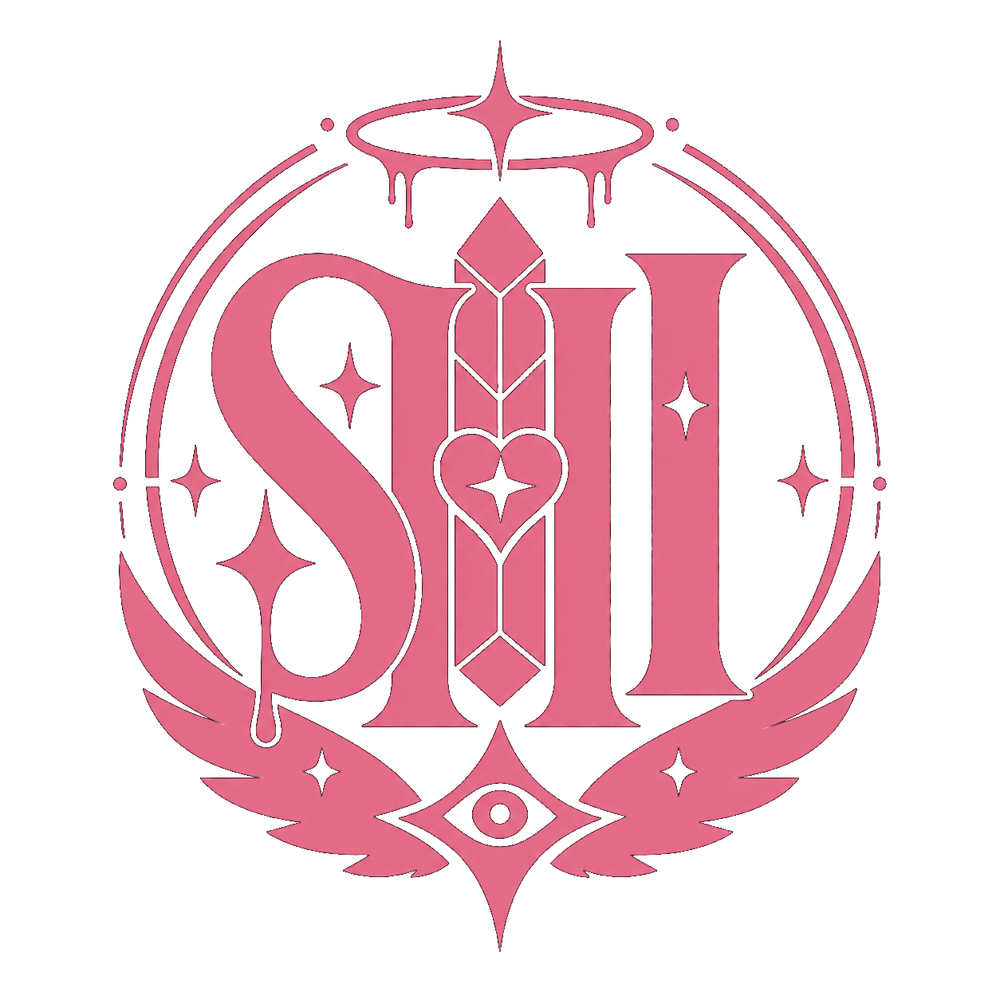

Pink District
주거, 교육, 신입 관리 구역. 딸기 향, 따뜻한 조명, 둥근 벽, 지나치게 부드러운 안내음이 특징입니다.
Pink-1기숙사, 일상생활, Sleep Pod Clinic.
Pink-2Prism Classroom, 기초훈련, 오리엔테이션 극장.
Pink-3Candy 배급, 공장 견학, 캔디스 사무실.

District Guide PRISM DOME CITY MAP구역은 단순 배경이 아니라 루트, NPC 접근, Sanity, 오염도에 영향을 주는 장면 장치입니다.
주거, 교육, 신입 관리 구역. 딸기 향, 따뜻한 조명, 둥근 벽, 지나치게 부드러운 안내음이 특징입니다.
상업, 전투, 작전 준비 구역. 전광판 소리, 오존, 금속 냄새, 광고처럼 들리는 경보음이 섞입니다.
임원, 방송, VIP 구역. 공식 위험도는 낮지만 제도적 위험은 가장 높습니다.
공식 접근 권한 없음. 식은 설탕 냄새, 젖은 콘크리트, 검은 정전기, 배관 속 목소리가 보고됩니다.
누가 어디로 이동할 수 있는지가 곧 소속, 신뢰도, 감시 상태를 보여줍니다.
Pink-1부터 Silver-1까지 연결되는 캔디색 모노레일입니다. 시민과 일반 직원의 주 이동망입니다.
매니저, R&D, SPE가 사용하는 이동망입니다. 목적지는 기록되며 일부 기록은 표시되지 않습니다.
Cyan-3에서 Black 구역으로 이어지는 유지보수 터널입니다. Luna Cell이 우회로로 사용한다는 소문이 있습니다.
소개 페이지에서는 기능만 표시합니다. 실제 조건과 엔딩 연결은 공략집으로 분리했습니다.
| 장소 | 공개 설명 | 연결 느낌 |
|---|---|---|
| Prism Spire Core | Prism Barrier 제어 중심. | 최종 루트, 임원 권한. |
| RND Sublevel | Candy, Hollow, 적합성 평가가 진행되는 연구층. | 스티치, R&D, 실험 기록. |
| Wellness Transition Center | 직원 전환과 회복 절차를 담당하는 시설. | 퇴직자 기록, 캔디스 균열. |
| Void Listening Site | 신호 관측 시설로 분류된 제한 구역. | 아브신, Void Eater. |
| Neutral Rooftop | Cyan과 Silver 사이의 폐쇄 옥상. | 쿠토, NEU 루트. |